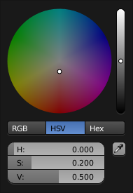

拾色器¶

HSV色盘。
拾色器是用于指定颜色值的弹出菜单。拖动选择时同时按住 Ctrl ，用于吸附色调，快速选择基础色。
- 拾色框
- 用于选择第一和第二种颜色成分，其形状 类型 可以选择。
- 颜色滑块
- 右侧的滑块用于指定第三种颜色成分，也可以使用
Wheel调节。 - 色彩空间
使用下方的按钮选择 Color Space 。
RGB, HSV/HSL, Hex
- 颜色值
Blender使用(0 to 1.0)数值表示RGB与HSV颜色。
十六进制 (Hex) 表示为 RRGGBB，还支持RGB 十六进制速记色， 如深黄 FFCC00 可以简写为 FC0。
对于可以使用透明色的操作，下方还会显示 "A" 值滑块。
- 吸管
- 吸管工具 (吸管图标) 可以从Blender窗口内部取样颜色。